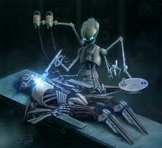

show the in canon makings of character Before General Grievous became a hulking cyborg he was a very powerful Kaleesh warlord. The Kaleesh were a more primitive type of people rarely using guns they opted for spears and swords. They were lacking technology and power but were happy.So when the Galactic Republic arrived and asked them if they would like to join their grand alliance. The Kaleesh agreed but then came a problem: who would be the ambassador for not only the Kaleesh but the planet one name arose Qymaen jai Sheelal aka General Grievous. However Darth Sidious's right hand man Count Dooku had heard about the Galactic Republic and the Kaleesh's plans and had to stop one more planet from siding with the Republic. So he crashed the ship Qymen was taking to the Republic, wiped the Kaleesh off the face of their planet and rebuilt Qymen into a massive cyborg. When he awake from the transformation Count Dooku had recited to the Kaleesh of how the Republic had crashed his ship and destroyed his people. Count Dooku had also told him how conveniently he had a position for Qymen now General Grievous to become the lead General of an army who would soon burn the republic capital to the ground. General Grievous was practically jumping at the chance to enact revenge upon the Galactic Republic and the rest was history.
 explain the different General Grievous's
The best known version of General Greivous is in the 2005 movie The Revenge of the Sith. Where he serves as a more "twirly mustache" kind of villain
not Really doing anything but Running away. This is because George Lucas had General Greivous be more of a side to the actual story and meat of the movie
being Anakin's struggle to control his emotions and how he slowly falls to the dark side of the force. General Greivous gets no character development what so
ever throughout the course of the movie but because of how popular it is this is the one most people know him for.
The General Grievous I am talking about and will be referring to though the course of this website is Genndy Tartakovsky's depiction of him. You see when George Lucas
was making the movies, General Grievous starred in he asked Cartoon Network to run a mini series about the movie. It was basically an animated trailer to get people hyped up
for George's soon to come movie and who was directing the mini series other than the Genndy Tartakovsky, a vet in the business. So when it came to the episode about
General Greivous all George gave Genndy was he was a cyborg who hunted jedi and Genndy being a wiz in character creation made a full fledged antagonised out of
General Greivous. He scares a group of jedi knowing their powers directly relate to their emotions and when fighting them tries to separate them as to weaken their
overall power as a group. The differences of these characters are leagues apart but serve the same purpose they are both side antagonist's but one is just better
explain general Grievous's style of fighting abd why its so effective aginst jedi General Greivous's style of fighting is one of the best non jedi ways of fighting a jedi period. Trained by Count Dooku on top of his way to deal with jedi General Greivous was taught the inner workings of Jedi arts by Count Dooku who was a former Jedi. On top of that General Greivous was told about how Jedi and Sith's emotions can have an effect on their powers. He was also told by Count Dooku that only by using things like fear, surprise and intimidation can he defeat the jedi. General Greivous still excels in combat with non jedi because of his extreme size, very fast speed, durable outside layer, and Sith training. However at the end of the day no matter how hard Grievous trains he is not the best duelist but what he is good at is crowd control. Jumping from person to person with his long legs and immense speed Greivous may not always beat a jedi but he is faster than them. He also uses his clawed feet to grab just about anything he can and if he can't. He likes to kick and separate opponents apart from each other. Other times Greivous finds weapons and objects to throw at jedi to obstruct their sight so they can't push him back or grab and crush him with the force.
go over the trophies he takes from the jedi and his weakness against them General Greivous is a great warrior and fighter but the best way to fight a jedi is having force powers yourself and Grievous is just not force sensitive. He is completely out of his league any time he fights a jedi in the episodes he is apart of in the mini series Greivous sometimes struggles against students of the force. Just because for a fraction of a second he messed up his offense and was caught off balance which for General Grievouse's case can mean certain doom. So every Jedi General Greivous takes out he takes their lightsaber as a trophy for his collection of weapons.